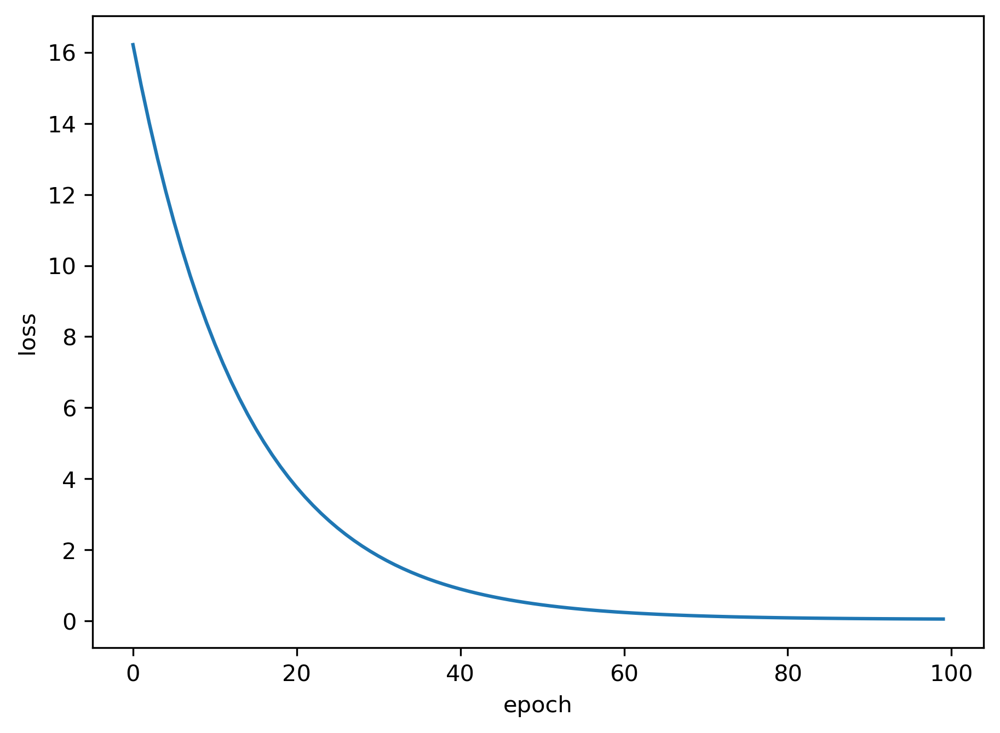
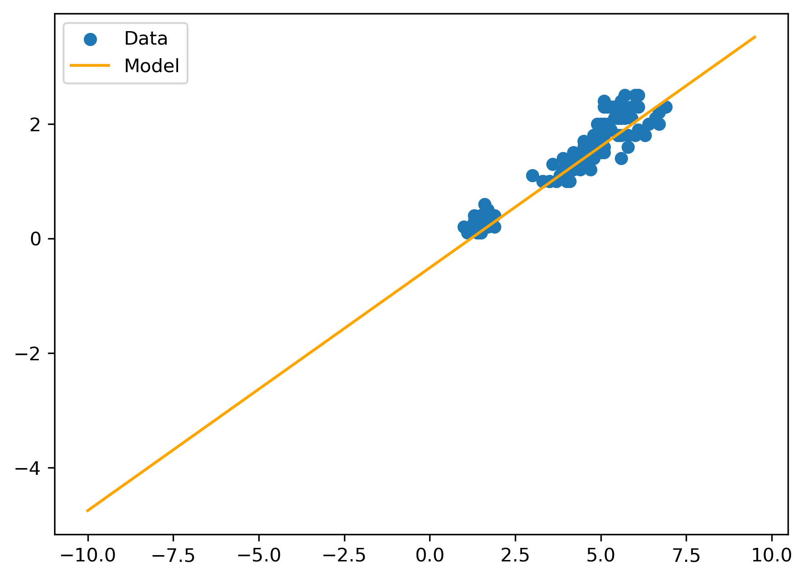

Code
import numpy as np
import matplotlib.pyplot as plt
import pandas as pd
import seaborn as sns
from sklearn import datasetsimport numpy as np
import matplotlib.pyplot as plt
import pandas as pd
import seaborn as sns
from sklearn import datasetsiris = datasets.load_iris()
X = iris.data # measurements
y = iris.target # species label
print(f"type(X) = {type(X)}")
print(f"type(y) = {type(y)}")
print(f"shape(X) = {X.shape}")
print(f"shape(y) = {y.shape}")
# define number of observations and number of variables
n_obs, n_var = iris.data.shapetype(X) = <class 'numpy.ndarray'>
type(y) = <class 'numpy.ndarray'>
shape(X) = (150, 4)
shape(y) = (150,)… use pandas dataframe for convenience
df = pd.DataFrame(X, columns=iris.feature_names)
print("Numerical Summaries")
print(df.describe())
print("Wide Format - top")
print(df.head())
# reshape to long format
df_long = df.melt(var_name="Feature", value_name="Value")
print('Long Format - top')
print(df_long.head())Numerical Summaries
sepal length (cm) sepal width (cm) petal length (cm) \
count 150.000000 150.000000 150.000000
mean 5.843333 3.057333 3.758000
std 0.828066 0.435866 1.765298
min 4.300000 2.000000 1.000000
25% 5.100000 2.800000 1.600000
50% 5.800000 3.000000 4.350000
75% 6.400000 3.300000 5.100000
max 7.900000 4.400000 6.900000
petal width (cm)
count 150.000000
mean 1.199333
std 0.762238
min 0.100000
25% 0.300000
50% 1.300000
75% 1.800000
max 2.500000
Wide Format - top
sepal length (cm) sepal width (cm) petal length (cm) petal width (cm)
0 5.1 3.5 1.4 0.2
1 4.9 3.0 1.4 0.2
2 4.7 3.2 1.3 0.2
3 4.6 3.1 1.5 0.2
4 5.0 3.6 1.4 0.2
Long Format - top
Feature Value
0 sepal length (cm) 5.1
1 sepal length (cm) 4.9
2 sepal length (cm) 4.7
3 sepal length (cm) 4.6
4 sepal length (cm) 5.0plt.figure()
sns.histplot(df_long["Value"], bins=30)
plt.title("Histogram")
plt.xlabel("Value")
plt.ylabel("Count")
plt.tight_layout()
plt.show()print(f"variable means: {np.mean(X, axis=0)})")
plt.figure()
sns.violinplot(x="Feature", y="Value", data=df_long)
plt.title("Violin plots for all variables")
plt.tight_layout()
plt.show()variable means: [5.84333333 3.05733333 3.758 1.19933333])na_counts = df.isna().sum() # pandas
#na_counts = np.isnan(X).sum(axis=0) # numpy
print("Missing values:\n", na_counts)
sns.scatterplot(x=na_counts.index, y=na_counts.values)
plt.title("Number of missing values per feature")
plt.xlabel("Variable")
plt.ylabel("# missing")
plt.tight_layout()
plt.show()Missing values:
sepal length (cm) 0
sepal width (cm) 0
petal length (cm) 0
petal width (cm) 0
dtype: int64
# don't use heatmaps before you know what you get ;-)
plt.figure()
sns.heatmap(df, cmap="Blues", cbar_kws={'label': 'Value'})
plt.xlabel("Variables (features)")
plt.ylabel("Samples (observations)")
plt.tight_layout()
plt.show()sns.pairplot(df, height=1.5, aspect=1.0)corr = df.corr()
plt.figure()
sns.heatmap(
corr,
vmin=-1, vmax=1,
cmap="coolwarm",
annot=True, # show correlation values
fmt=".2f", # format to 2 decimals
square=True, # make cells square
cbar_kws={"label": "Pearson r"}
)
plt.title("Correlation Matrix")
plt.tight_layout()
plt.show()… is almost always useful (esp. when variables live on different scales)
from sklearn.preprocessing import StandardScaler
scaler = StandardScaler()
Xs = scaler.fit_transform(X)
# numpy2pandas (mostly for plotting convenience)
col_names = ["SL", "SW", "PL", "PW"]
df_scaled = pd.DataFrame(Xs, columns=col_names)
df_scaled_long = df_scaled.melt(var_name="Feature", value_name="Value")
print(f"variable means: \n{df_scaled.mean()})")
plt.figure()
sns.violinplot(x="Feature", y="Value", data=df_scaled_long)
plt.title("Violin plots for scaled variables")
plt.tight_layout()
plt.show()variable means:
SL -1.690315e-15
SW -1.842970e-15
PL -1.698641e-15
PW -1.409243e-15
dtype: float64)from sklearn.cluster import KMeans
kmeans = KMeans(n_clusters=3)
labels = kmeans.fit_predict(Xs)
df_scaled["cluster"] = labels.astype(str)
sns.pairplot(df_scaled, hue="cluster", height=1.5, aspect=1.0)…. provides very convenient low-dimensional representation of the data
from sklearn.decomposition import PCA
pca = PCA(n_components=2)
X_pca = pca.fit_transform(Xs)
var_exp = pca.explained_variance_ratio_
xlab = f"PC1 ({var_exp[0]:.3f})"
ylab = f"PC2 ({var_exp[1]:.3f})"
sns.scatterplot(x=X_pca[:,0], y=X_pca[:,1])
plt.title("PCA plot")
plt.xlabel(xlab)
plt.ylabel(ylab)
plt.tight_layout()
plt.show()Use PyTorch to define a linear model (with one input and one output), a suitable loss function, and an optimizer.
import numpy as np
import torch
import torch.nn as nn
print('torch version:', torch.__version__)
# identical to the 1st lecture (same model)
model = nn.Sequential(nn.Linear(1, 1)) # n_in = 1, n_out = 1
loss_func = nn.MSELoss()
optimizer = torch.optim.SGD(model.parameters())torch version: 2.7.1Again we need some reformating (numpy \(\to\) pytorch tensor) to make the data fit with the pytorch framework. We also need to define the input data (x_t) and output data (y_t). Their shape and dimensionality should correspond to the model defined above.
# select two arbitrary variables as x=X[:,2] and y=X[:,3]
# just for illustration - feel free to change
x_t = torch.as_tensor(X[:,2], dtype=torch.float32).view(-1, 1)
y_t = torch.as_tensor(X[:,3], dtype=torch.float32).view(-1, 1)
print(f"shape(x_t): {x_t.shape}")
print(f"shape(y_t): {y_t.shape}")shape(x_t): torch.Size([150, 1])
shape(y_t): torch.Size([150, 1])Chose a number of iterations (e.g 100 “epochs”) and keep track of the loss at each iteration.
losses = []
model.train()
for epoch in range(100):
y_pred = model(x_t)
loss = loss_func(y_pred, y_t)
loss.backward()
optimizer.step()
optimizer.zero_grad()
losses.append(loss.item()) # keep track of losses
# finished training. inspect model
print('Mean Squared Error (loss): ',loss.item())
print('Parameters:')
for name, p in model.named_parameters():
print(name, p.detach())Mean Squared Error (loss): 0.05693141371011734
Parameters:
0.weight tensor([[0.4240]])
0.bias tensor([-0.5117])Plot the losses against the number of iterations an check if they are reducing
plt.figure()
plt.plot(losses)
plt.ylabel('loss')
plt.xlabel('epoch')
plt.show()
Use the trained model to make predction for 50 new \(x\)-values in a range \((-10,10)\). Overlay the model predictions with the original data on which the model was learned.
# pick a range of new x-values (meaningful?)
x_new = np.arange(-10,10,0.5)
# convert to tensor
x_new_t = torch.as_tensor(x_new, dtype=torch.float32).view(-1, 1)
# run predictions
yp = model(x_new_t)
# convert from tensor to numpy and reshape
y_pred = yp.detach().numpy().flatten()
plt.scatter(x_t, y_t, label="Data")
plt.plot(x_new,y_pred, c="orange", label="Model")
plt.legend()
plt.show()